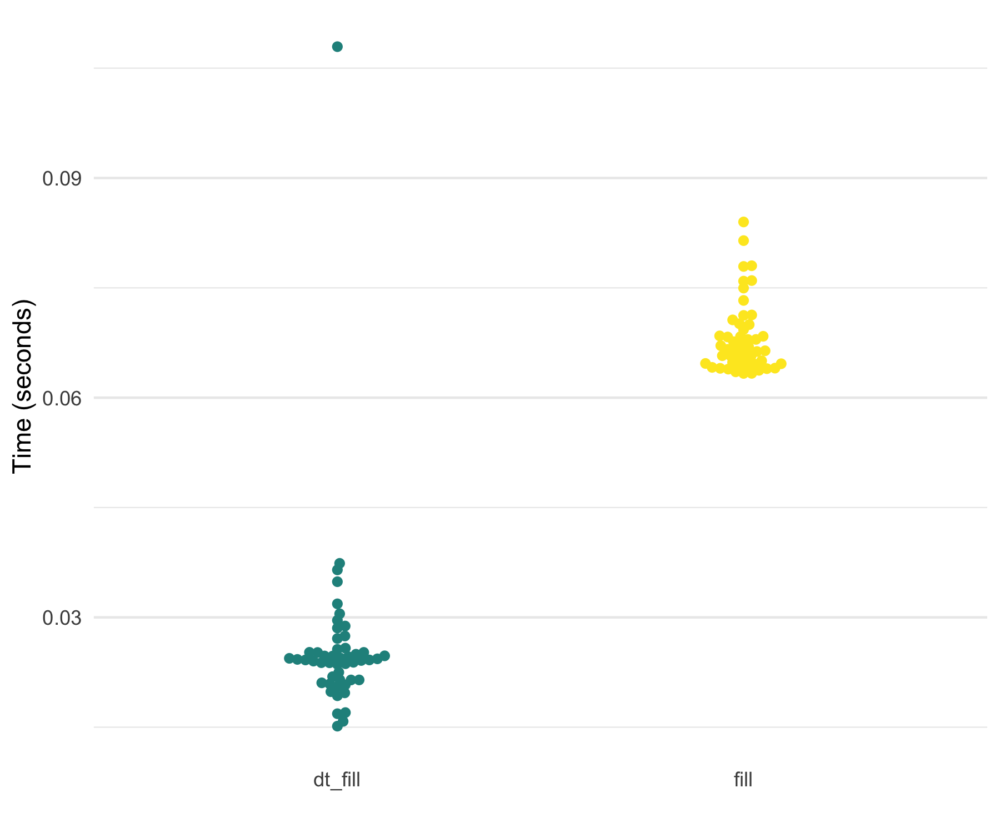

The goal of tidyfast is to provide fast and efficient alternatives to some tidyr and dplyr functions using data.table under the hood. Each have the prefix of dt_ to allow for autocomplete in IDEs such as RStudio. These should compliment some of the current functionality in dtplyr (but notably does not use the lazy_dt() framework of dtplyr). This package imports data.table and Rcpp (no other dependencies).
These are, in essence, translations from a more tidyverse grammar to data.table. Most functions herein are in places where, in my opinion, the data.table syntax is not obvious or clear. As such, these functions can translate a simple function call into the fast, efficient, and concise syntax of data.table.
The current functions include:
Nesting and unnesting (similar to dplyr::group_nest() and tidyr::unnest()):
-
dt_nest()for nesting data tables -
dt_unnest()for unnesting data tables -
dt_hoist()for unnesting vectors in a list-column in a data table (still experimental)
If Else (similar to dplyr::case_when()):
-
dt_case_when()fordplyr::case_when()syntax with the speed ofdata.table::fifelse()
Fill (similar to tidyr::fill())
-
dt_fill()for fillingNAvalues with values before it, after it, or both. This can be done by a grouping variable (e.g. fill inNAvalues with values within an individual).
Count and Uncount (similar to tidyr::uncount() and dplyr::count())
-
dt_count()for fast counting by group(s) -
dt_uncount()for creating full data from a count table
Separate (similar to tidyr::separate())
-
dt_separate()for splitting a single column into multiple based on a match within the column (e.g., column with values like “A.B” could be split into two columns by using the period as the separator where column 1 would have “A” and 2 would have “B”). It is built ondata.table::tstrsplit(). This is not well tested yet and lacks some functionality oftidyr::separate().
Pivoting (similar to dplyr::pivot_longer() and dplyr::pivot_wider())
- In development still…
Adjust data.table print options
-
dt_print_options()for adjusting the options forprint.data.table()
Package is still in active development.
Installation
You can install the development version from GitHub with:
Examples
The nesting and unnesting functions were shown in a previous preprint while the other functions are new. Herein, I show some simple applications.
Nesting and Unnesting
The following data table will be used for the nesting/unnesting examples.
library(tidyfast)
library(data.table)
library(dplyr) # to compare with case_when()
library(tidyr) # to compare with fill() and separate()
dt <- data.table(
x = rnorm(1e5),
y = runif(1e5),
grp = sample(1L:3L, 1e5, replace = TRUE),
nested1 = lapply(1:10, sample, 10, replace = TRUE),
nested2 = lapply(c("thing1", "thing2"), sample, 10, replace = TRUE),
id = 1:1e5)To make all the comparisons herein more equal, we will set the number of threads that data.table will use to 1.
We can nest this data using dt_nest():
nested <- dt_nest(dt, grp)
nested
#> grp data
#> 1: 1 <data.table>
#> 2: 2 <data.table>
#> 3: 3 <data.table>We can also unnest this with dt_unnest():
dt_unnest(nested, col = data, by = grp)
#> by x y nested1
#> 1: 1 0.1624127 0.11793103 2,3,5,9,1,3,...
#> 2: 1 -0.8749771 0.01200319 6,2,4,8,7,6,...
#> 3: 1 -1.2709261 0.99871440 2,3,5,9,1,3,...
#> 4: 1 0.6252182 0.08392742 4,1,2,5,4,2,...
#> 5: 1 -0.4269078 0.46730652 5,5,4,2,5,2,...
#> ---
#> 99996: 3 -1.3785841 0.65154073 1,1,1,1,1,1,...
#> 99997: 3 1.7506497 0.35086904 1,3,1,3,1,3,...
#> 99998: 3 1.7920949 0.57767072 2,4,2,2,3,4,...
#> 99999: 3 1.3958509 0.20316446 5,5,4,2,5,2,...
#> 100000: 3 0.4617428 0.64128894 2,8,2,4,6,6,...
#> nested2 id
#> 1: thing2,thing2,thing2,thing2,thing2,thing2,... 10
#> 2: thing2,thing2,thing2,thing2,thing2,thing2,... 18
#> 3: thing2,thing2,thing2,thing2,thing2,thing2,... 20
#> 4: thing1,thing1,thing1,thing1,thing1,thing1,... 25
#> 5: thing1,thing1,thing1,thing1,thing1,thing1,... 27
#> ---
#> 99996: thing1,thing1,thing1,thing1,thing1,thing1,... 99991
#> 99997: thing1,thing1,thing1,thing1,thing1,thing1,... 99993
#> 99998: thing2,thing2,thing2,thing2,thing2,thing2,... 99994
#> 99999: thing1,thing1,thing1,thing1,thing1,thing1,... 99997
#> 100000: thing1,thing1,thing1,thing1,thing1,thing1,... 99999When our list columns don’t have data tables (as output from dt_nest()) we can use the dt_unnest_vec() function, that will unnest vectors.
If Else
Also, the new dt_case_when() function is built on the very fast data.table::fiflese() but has syntax like unto dplyr::case_when(). That is, it looks like:
To show that each method, dt_case_when(), dplyr::case_when(), and data.table::fifelse() produce the same result, consider the following example.
x <- rnorm(1e6)
medianx <- median(x)
x_cat <-
dt_case_when(x < medianx ~ "low",
x >= medianx ~ "high",
is.na(x) ~ "unknown")
x_cat_dplyr <-
case_when(x < medianx ~ "low",
x >= medianx ~ "high",
is.na(x) ~ "unknown")
x_cat_fif <-
fifelse(x < medianx, "low",
fifelse(x >= medianx, "high",
fifelse(is.na(x), "unknown", NA_character_)))
identical(x_cat, x_cat_dplyr)
#> [1] TRUE
identical(x_cat, x_cat_fif)
#> [1] TRUENotably, dt_case_when() is very fast and memory efficient, given it is built on data.table::fifelse().

Fill
A new function is dt_fill(), which fulfills the role of tidyr::fill() to fill in NA values with values around it (either the value above, below, or trying both). This currently relies on the efficient C++ code from tidyr (fillUp() and fillDown()).
x = 1:10
dt_with_nas <- data.table(
x = x,
y = shift(x, 2L),
z = shift(x, -2L),
a = sample(c(rep(NA, 10), x), 10),
id = sample(1:3, 10, replace = TRUE))
# Original
dt_with_nas
#> x y z a id
#> 1: 1 NA 3 NA 2
#> 2: 2 NA 4 2 1
#> 3: 3 1 5 7 3
#> 4: 4 2 6 4 3
#> 5: 5 3 7 3 3
#> 6: 6 4 8 5 2
#> 7: 7 5 9 9 1
#> 8: 8 6 10 NA 1
#> 9: 9 7 NA NA 2
#> 10: 10 8 NA NA 3
# All defaults
dt_fill(dt_with_nas, y, z, a)
#> y z a
#> 1: NA 3 NA
#> 2: NA 4 2
#> 3: 1 5 7
#> 4: 2 6 4
#> 5: 3 7 3
#> 6: 4 8 5
#> 7: 5 9 9
#> 8: 6 10 9
#> 9: 7 10 9
#> 10: 8 10 9
# by id variable called `grp`
dt_fill(dt_with_nas,
y, z, a,
id = list(id))
#> id y z a
#> 1: 2 NA 3 NA
#> 2: 2 4 8 5
#> 3: 2 7 8 5
#> 4: 1 NA 4 2
#> 5: 1 5 9 9
#> 6: 1 6 10 9
#> 7: 3 1 5 7
#> 8: 3 2 6 4
#> 9: 3 3 7 3
#> 10: 3 8 7 3
# both down and then up filling by group
dt_fill(dt_with_nas,
y, z, a,
id = list(id),
.direction = "downup")
#> id y z a
#> 1: 2 4 3 5
#> 2: 2 4 8 5
#> 3: 2 7 8 5
#> 4: 1 5 4 2
#> 5: 1 5 9 9
#> 6: 1 6 10 9
#> 7: 3 1 5 7
#> 8: 3 2 6 4
#> 9: 3 3 7 3
#> 10: 3 8 7 3In its current form, dt_fill() is faster than tidyr::fill() and uses slightly less memory. Below are the results of filling in the NAs within each id on a 19 MB data set.
x = 1:1e6
dt3 <- data.table(
x = x,
y = shift(x, 10L),
z = shift(x, -10L),
a = sample(c(rep(NA, 10), x), 10),
id = sample(1:3, 10, replace = TRUE))
df3 <- data.frame(dt3)
marks3 <-
bench::mark(
tidyr::fill(dplyr::group_by(df3, id), x, y),
tidyfast::dt_fill(dt3, x, y, id = list(id)),
check = FALSE,
iterations = 50
)
Separate
The dt_separate() function is still under heavy development. Its behavior is similar to tidyr::separate() but is lacking some functionality currently. For example, into needs to be supplied the maximum number of possible columns to separate.
dt_separate(data.table(col = "A.B.C"), col, into = c("A", "B"))
#> Error in `[.data.table`(dt, , eval(split_it)) :
#> Supplied 2 columns to be assigned 3 items. Please see NEWS for v1.12.2.For current functionality, consider the following example.
dt_to_split <- data.table(
x = paste(letters, LETTERS, sep = ".")
)
dt_separate(dt_to_split, x, into = c("lower", "upper"))Testing with a 4 MB data set with one variable that has columns of “A.B” repeatedly, shows that dt_separate() is fast but less memory efficient than tidyr::separate().

Count and Uncount
The dt_count() function does essentially what dplyr::count() does. Notably, this, unlike the majority of other dt_ functions, wraps a very simple statement in data.table. That is, data.table makes getting counts very simple and concise. Nonetheless, dt_count() fits the general API of tidyfast. To some degree, dt_uncount() is also a fairly simple wrapper, although the approach may not be as straightforward as that for dt_count().
The following examples show how count and uncount can work. We’ll use the dt data table from the nesting examples.
uncounted <- dt_uncount(counted, N)
print(uncounted)
#> grp
#> 1: 1
#> 2: 1
#> 3: 1
#> 4: 1
#> 5: 1
#> ---
#> 99996: 3
#> 99997: 3
#> 99998: 3
#> 99999: 3
#> 100000: 3These are also quick (not that the tidyverse functions were at all slow here).
dt5 <- copy(dt)
df5 <- data.frame(dt5)
marks5 <-
bench::mark(
counted_tbl <- dplyr::count(df5, grp),
counted_dt <- tidyfast::dt_count(dt5, grp),
tidyr::uncount(counted_tbl, n),
tidyfast::dt_uncount(counted_dt, N),
check = FALSE,
iterations = 25
)
Other functions are currently in progress.
Note
Please note that the tidyfast project is released with a Contributor Code of Conduct. By contributing to this project, you agree to abide by its terms.
Also, ggplot2, stringr, and ggbeeswarm were used herein for creating plots.